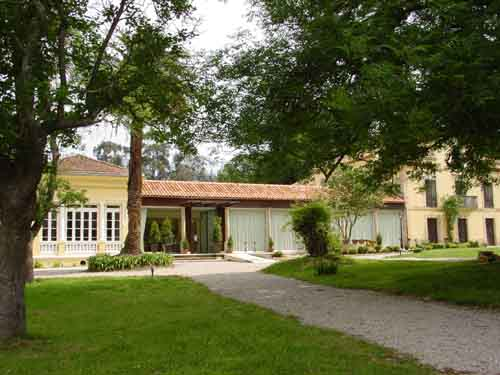
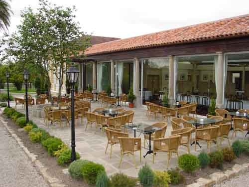
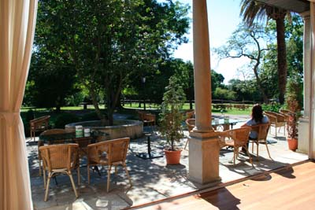
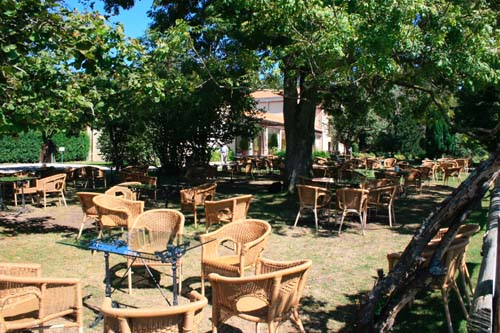

Ynfanzón, posee una cafetería abierta todo el año donde realizar un primer contacto, tomar unas copas o TAPEAR. La verdad es que tiene un tamaño reducido y ha de apoyarse en las terrazas y el frente del salón (en la foto cerrado con cortinas) para afrontar cantidades medias de gente.



Frente al salón grande se encuentra la terraza permanente que, orientada al sur, sirve tanto de solarium, como de "picotearium", con su propia carta de tapas y copas que funciona durante todo el año exceptuando los días en que se celebren bodas y, desde un par de horas antes de comenzar estas, hasta el final de las mismas. En estos casos, dependiendo de la estación, se traslada a la sombra del fresno de los caballos que amablemente irán a compartir unos pinchos con los asistentes...
Eso si, tras la valla de separación...

A la sombra del fresno se coloca una terraza en primavera-verano de forma continua para disfrutar " in situ" de la naturaleza y tener más intimidad. En esta terraza se prestan todos los servicios de la otra terraza y además se sirve sidra, cosa que en otros sitios no se puede para evitar manchar las losas de piedra arenisca o el entarimado.
| PARRILLADA DE CARNES PARA 2 | 60,00 |
| ACEITUNAS | 2,00 |
| BOCADITOS DE POLLO EMPANADOS CON SALSA BARBACOA | 13,00 |
| BROCHETA DE SOLOMILLO CON CEBOLLA CONFITADA Y PATATINAS | 20,00 |
| CALAMARES ROMANA | 22,00 |
| CHORIZO CRIOLLO | 7,00 |
| COSTILLAS CON PATATAS | 16,00 |
| CROQUETAS DE ORICIOS | 19,00 |
| CROQUETAS DE JAMON | 14,00 |
| ENSALADA DE SALMON Y AGUACATE | 16,00 |
| ENSALADA MIXTA(lechuga, tomate, cebolla, esparrago, bonito y huevo duro) | 13,00 |
| ENSALADILLA RUSA | 9,00 |
| FRITOS DE PESCADO | 22,00 |
| GAMBAS GABARDINA | 18,00 |
| JAMÓN IBERICO DE BELLOTA | 24,00 |
| JAMON RECEBO | 18,00 |
| PAN | 1,50 |
| PAN SIN GLUTEN | 2,00 |
| PATATAS 3 SALSAS ( Queso, Ali-Oli, Brava) | 12,00 |
| PULPO A LA GALLEGA | 23,00 |
| PUNTILLAS (MINI CHIPIRONES) A LA ROMANA | 15.00 |
| SALPICON DE GAMBONES | 19,00 |
| SANWICH MIXTO (jamón y queso) | 4,00 |
| SARTEN DE LOMO Y HUEVO CON PATATAS | 12,00 |
| SURTIDO MIXTO DE QUESOS | 16,00 |
| TARTA (RACION) | 5,50 |
| TORTILLA DE PATATAS | 15,00 |
| TORTOS DE MAIZ CON JAMON IBERICO Y QUESO DE CABRA | 14,50 |
| ZAMBURIÑAS A LA PLANCHA | 23,00 |
BEBIDAS
|
AGUA GRANDE |
2.50 |
| AGUA PEQUEÑA | 1.50 |
| ALBARIÑO, GODELLO | 3.50 |
| BENJAMIN | 5,00 |
|
BISOLAN, AQUARIUS, NESTEA, TRINA |
3.30 |
|
CAFÉ |
1.80 |
| CAFÉ CON LICOR | 3.50 |
| CAFÉ MEDIANO | 3.00 |
| CALDO | 2.00 |
|
CAÑA |
2.80 |
| CAÑA GRANDE - CAÑON | 4.50 |
| CERVEZA MEDIA | 3.00 |
|
CHUPITO EXTRA |
6.50 |
|
CHUPITO NORMAL |
2.80 |
|
CHUPITO PREMIUM |
10.50 |
|
COPA EXTRA |
12.00 |
|
COPA NORMAL |
6,50 |
|
CORTO CERVEZA/VERMUT |
2.00 |
|
CORTO VERMUT SOLERA |
2.30 |
|
CUBA EXTRA |
8,00 |
| CALIMOCHO/ TINTO VERANO | 4.70 |
|
CUBA PREMIUM |
10.20 |
|
JARRA CERVEZA |
12,00 |
|
REFRESCOS |
3.00 |
|
RIOJA |
3,00 |
| SIDRA D.O. | 4.50 |
| SIDRA | 3.50 |
| VERMOUTH | 3.00 |
| VERMOUTH SOLERA | 3.50 |